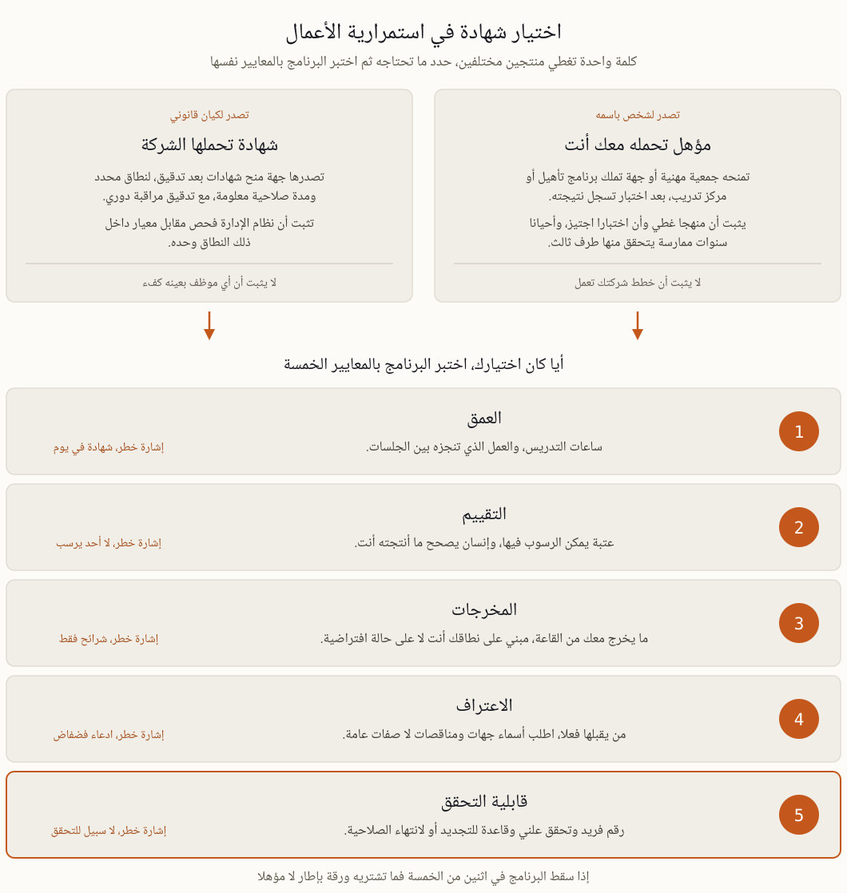

الشهادات في استمرارية الأعمال بدول الخليج، أيها يستحق أن تحمله
كلمة واحدة تغطي منتجين لا صلة بينهما. الشخص يصبح حاصلا على شهادة حين تسجل جهة ممتحنة أنه اجتاز اختبارا، والمؤسسة تصبح حاصلة على شهادة حين يؤكد مدقق أن نظامها يطابق معيارا داخل نطاق محدد. الاختيار الصحيح يبدأ من معرفة أي المنتجين تحتاج فعلا.
كلمة واحدة تخفي شيئين مختلفين
في إعلانات الوظائف وكراسات المناقصات ومراسلات الجهات الرقابية تحمل كلمة "معتمد" معنيين لا يكاد يجمع بينهما شيء. الشخص يحصل على مؤهل حين تمتحنه جمعية مهنية أو جهة تملك برنامج تأهيل وتسجل نتيجته، والمؤهل ملك له ينتقل معه إلى صاحب العمل التالي. أما المؤسسة فتحصل على شهادة حين تدقق جهة منح شهادات نظام إدارتها مقابل معيار وتصدر وثيقة لنطاق معلوم ومدة محددة، ثم تعود لتدقيق مراقبة حتى انتهاء الصلاحية. ولا يستلزم أحدهما الآخر. فقد تحمل شركة شهادة ISO 22301 ولا يبقى فيها بعد رحيل الاستشاري من يستطيع إعادة بناء النظام. ويضاف إلى الاثنين شيء ثالث يخلط به كثيرا، وهو تقييم النضج الذي ينتج درجة وخارطة طريق ولا يمنح اعتمادا على الإطلاق. لذلك حين يطلب مستند ما "شهادة" فاقرأ الطلب مرة ثانية وانظر هل يسمي شخصا أم كيانا، فالإجابة تغير كل ما ستشتريه بعدها.
ما الموجود فعلا في هذا المجال
السوق أصغر مما يبدو، وكل ما فيه تقريبا يقع في خمس عائلات.
درجات الجمعيات المهنية. معهد استمرارية الأعمال البريطاني ومؤسسة DRI الأمريكية يديران مسارات متدرجة، اختبار دخول مبني على مرجع معرفي منشور، ثم درجات أعلى تشترط سنوات ممارسة موثقة ومزكين. مسار بطيء ومقيد عن قصد، وهو أقرب ما لدى المهنة إلى عملة مشتركة بين أصحاب العمل.
البرامج المبنية على المعايير. دورات المنفذ الرئيسي والمدقق الرئيسي على أساس ISO 22301، خمسة أيام واختبار في الغالب. مفيدة مع تحفظ واحد، فدورة المدقق الرئيسي تعلم التدقيق، والتدقيق مهنة أخرى غير بناء البرنامج وتشغيله.
التدريب المرتبط بالجهات الوطنية. في الإمارات، الكفاءة في المعيار AE/SCNS/NCEMA 7000 هي ما تختبره التقييمات عمليا. وهو معيار وطني لا برنامج شهادات للأفراد، واختيار دورة عليه سؤال مستقل تعالجه صفحة التدريب على المعيار 7000.
المسارات الأكاديمية والمجاورة. شهادات الدراسات العليا في المخاطر وإدارة الطوارئ، ومؤهلات الأمن السيبراني والتدقيق التي تتضمن وحدات عن الاستمرارية. قوية في النظرية وصامتة غالبا عن المخرجات التي يطلبها المقيم.
برامج مقدمي التدريب. دورات تنتهي بشهادة يصدرها المدرب نفسه. الجودة تتراوح بين ممتازة وعديمة القيمة، ولهذا السبب بالذات وضعت المعايير الخمسة أدناه.
ما تقبله الجهات وأصحاب العمل في الإمارات والسعودية
النصوص التنظيمية في المنطقة متسقة في نقطة يغفل عنها معظم المشترين، فهي تشترط أشخاصا أكفاء ودليلا موثقا على تلك الكفاءة، ولا تسمي شهادة تجارية بعينها. عمل الهيئة الوطنية في الإمارات ينظر إلى نظام المؤسسة لا إلى شعار المدرب على الشرائح. وتوقعات المصرف المركزي الإماراتي بشأن المرونة التشغيلية، وإطار استمرارية الأعمال الذي يفرضه البنك المركزي السعودي على منشآته المرخصة، تتحدث عن أدوار مسماة واختبارات وتقارير. لذلك لا تفي الشهادة وحدها بمتطلب الامتثال أبدا، بل تسند سجل الكفاءة الذي يفي به، وهو سجل يحتاج اسما وتاريخا ومنهجا ونتيجة ليقبله التدقيق الداخلي. أما أصحاب العمل فسلوكهم مختلف. مسؤولو التوظيف في دبي وأبوظبي والرياض يفرزون السير الذاتية على أسماء مؤهلات محددة، وحروف الجمعيات المهنية بعد الاسم ما زالت تفتح أبوابا أكثر من شهادة مقدم تدريب. والخلاصة العملية غير رومانسية، درجة الجمعية تشتري لك سوق العمل، والتدريب التطبيقي يشتري لك القدرة على أداء العمل، ونادرا ما تؤدي عملية شراء واحدة الوظيفتين معا.

حدد أولا أي المنتجين تحتاج، ثم مرر أي برنامج على المعايير الخمسة نفسها.
خمسة معايير تفصل البرنامج عن الورقة
العمق. احسب ساعات التدريس ثم اسأل عما يجري بين الجلسات. نظام إدارة كامل لا يتعلم في ست ساعات، وأي عرض يمنح اعتمادا خلال يوم واحد يبيع حضورا في إطار مزخرف.
التقييم. لا بد من عتبة يمكن الرسوب دونها، ومن إنسان يصحح عملا أنتجه المشارك لا من نظام أسئلة اختيار من متعدد وحده. اسأل عن نسبة الراسبين، فالبرنامج الذي لا يرسب فيه أحد ليس تقييما بل بوابة دفع.
المخرجات. اسأل عما يخرج معك من القاعة. تحليل أثر على الأعمال لنطاقك أنت، وأهداف تعاف يظهر حسابها لا أرقامها فقط، وهيكل خطة بأسماء أشخاص حقيقيين. هذه قيمة البرنامج، والشرائح ليست منها.
الاعتراف. عبارة "معترف بها دوليا" صفة لا دليل. اسأل أي أصحاب عمل أو لجان مناقصات أو جهات قبلتها فعلا، واطلب مثالين تتحقق منهما بنفسك. وإذا ادعى مقدم البرنامج اعتمادا من جهة اعتماد فتحقق عند جهة الاعتماد لا على صفحته.
قابلية التحقق. المؤهل يحتاج رقما فريدا وطريقة علنية للتحقق وقاعدة للتجديد أو انتهاء الصلاحية. وإذا تعذر بعد ثلاث سنوات على أي طرف أن يؤكد أن الشهادة حقيقية فهي ليست مؤهلا بل تذكارا.
أسئلة اطرحها قبل الدفع
من يملك البرنامج، وهل من يدرسني هو نفسه من يمتحنني؟
ماذا تسجل الشهادة فعلا، ساعات حضور أم تقييما تم اجتيازه؟ الصياغة على الوثيقة أهم من الصياغة في الكتيب التسويقي.
ما التزامات التجديد، وماذا يحدث إن لم أف بها؟
إذا أغلق مقدم البرنامج أبوابه، فكيف يتحقق أحد من مؤهلي بعد ذلك؟
الوقت والمال وما يبقى في يدك
اضبط توقعاتك قبل مقارنة الأسعار. اختبار الدخول لدى الجمعيات المهنية يستهلك من المهني العامل أربعين إلى ستين ساعة تحضير، والدرجات العليا مقيدة بخبرة موثقة لا تشترى على عجل بأي مبلغ. والدورة المبنية على معيار بخمسة أيام واختبار تأخذ أسبوعا وتعيد معرفة أسبوع. أما البرنامج التطبيقي الذي ينتج مخرجات فيمتد ستة إلى عشرة أسابيع لمن يدرسه إلى جانب وظيفة كاملة، لأن العمل بين الجلسات هو جوهر الأمر. قارن العروض على أساس الكلفة مقابل نتيجة قابلة للتحقق لا على أساس السعر اليومي، وأحص ما يبقى في يدك بعد الانتهاء، رقم يتحقق منه طرف ثالث وسجل كفاءة يقبله ملف التدقيق ووثائق تستخدمها مؤسستك فعلا. وبرنامج ERGP لدينا ينتمي إلى هذه العائلة التطبيقية، ست وحدات ومخرج عملي من كل وحدة ومشروع ختامي يناقش أمام ممتحن، بالعربية كما بالإنجليزية، وهو يناسب مديرا عليه أن يبني نظاما ويدافع عنه أكثر مما يناسب من حاجته الأولى سطر في سيرة ذاتية تفرزها برامج التوظيف.
كيف يضيع المال عادة
شراء المؤهل الذي يسميه إعلان وظيفة دون التحقق مما إذا كان الإعلان منسوخا من سوق آخر بقواعد مختلفة.
حضور دورة مدقق رئيسي بنية بناء برنامج، ثم اكتشاف أن تدقيق النظام وإنشاءه مهارتان منفصلتان.
اعتماد المؤسسة قبل أن يوجد داخلها من يحافظ على النظام، وهو ما يظهر في أول تدقيق مراقبة لا في حفل التسليم.
ترك المؤهل ينتهي بصمت لأن أحدا لم يتابع ساعات التجديد، ثم اكتشاف ذلك أثناء تقديم عرض لمناقصة.
الشهادة في النهاية ادعاء عنك أو عن شركتك. والسؤال الوحيد المهم هو هل يستطيع طرف آخر التحقق من هذا الادعاء، وهل يوجد عمل حقيقي خلفه.